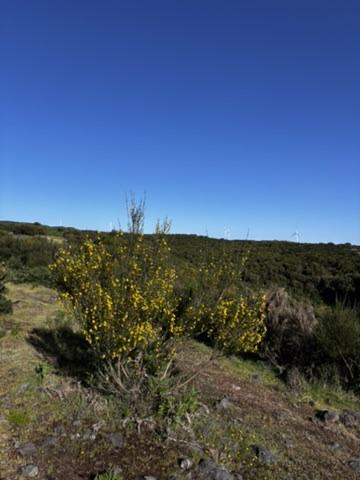
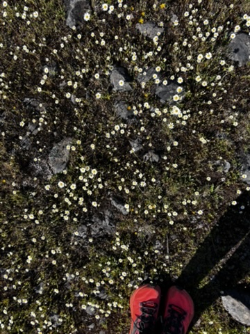

The official trails in Madeira were closed again. Heavy rain the previous week had flooded the levada paths and the parks service had shut them. I was looking at a blue-sky day with nowhere specific to go.
So I started walking in a direction that looked interesting and stopped following the signposts.

The moorland above Funchal. The wind turbines meant the ridge was somewhere up there. That was enough.
The upper parts of Madeira — above the levada irrigation channels, above the forest, above the tourist infrastructure — are open moorland. Low scrub, heather, the occasional yellow-flowering bush moving in the wind. Wind turbines on the ridge above. The landscape is not dramatic in the Dolomites sense. It's quiet and wide and slightly austere, and walking through it without a destination in mind is a different experience from following a waymarked trail.
When you have a route to follow, your attention goes forward — to the next waymark, the next junction, the distance remaining. When you don't, your attention goes everywhere. You look at things you'd walk past. You stop when something is interesting rather than when the guide says to stop. You make decisions based on curiosity rather than plan.

A path someone had made. Not on any map. I followed it.
At some point I found a track through the ferns — not wide enough to be an official trail, more like something made by repeated passage over time. Animals, maybe, or a local who knew where it went. I followed it. The ferns closed in on both sides, the red soil was soft underfoot, and the path narrowed to barely a shoulder-width before opening again.
This is the thing about unstructured movement: it requires a different trust. You trust the path to lead somewhere. You trust yourself to turn back if it doesn't. You stop worrying about whether you're doing the hike correctly, because there is no correct.

The daisies appeared when the path opened out. I stopped here for a while.
The path opened onto a rocky plateau covered in tiny white daisies. Not a view, not a summit, not anything a hiking guide would send you to. Just a small flat area covered in flowers, with the wind and the sky and nothing else requiring anything from you.
I stood there for a while. There was nothing particular to do except be there.
That was the hike. It didn't go anywhere notable. I didn't see anything extraordinary. But it cost me nothing and gave me an afternoon of attention — real, undirected attention — that I had been running slightly short of.
The best argument for leaving the trail occasionally is not the discoveries you make. It's the way of paying attention you practise. Marked trails are useful. They take you to things worth seeing. But they also do the navigation for you, and when someone else is navigating you stop looking.
Sometimes it's worth looking.